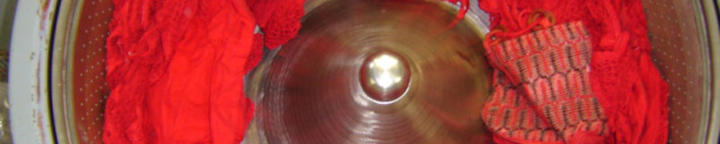
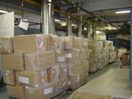
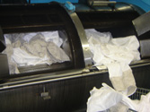
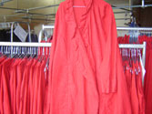
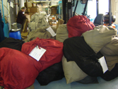

| | Nederlands | English | Deutsch | | ||||||||||||||
|  | ||||||||||||||
|
||||||||||||||
Ververij Voor het verven van zowel grote als kleine partijen beschikt de ververij over een groot aantal productiemachines. Het sterkste punt van onze textielververij is het snel leveren. Partijen of producties worden - bijna zonder uitzondering - onmiddellijk in behandeling genomen. Dankzij de grote productiecapaciteit is het bedrijf in staat opdrachten in een zeer kort tijdbestek uit te voeren. Verven zonder kleurverschil Aparte machines zijn gereserveerd voor het (optisch) wit en zwart verven, maar ook voor het verven van pastel- en donkere tinten wordt zo min mogelijk van machine gewisseld. Verder zijn er machines voor het verven van wol, zonder dat de wol vervilt of dat er pilling optreedt. Door jarenlange ervaring is Smit in staat een mooi product af te leveren. |
    |
|||||||||||||